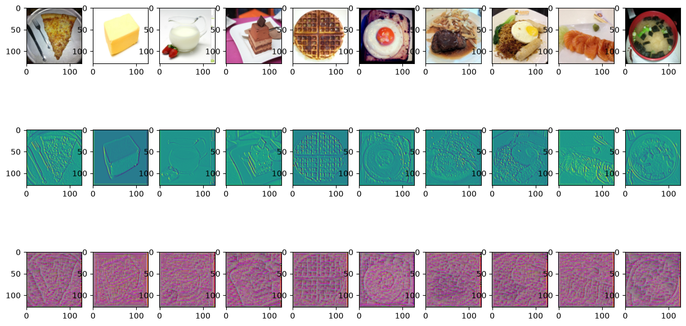
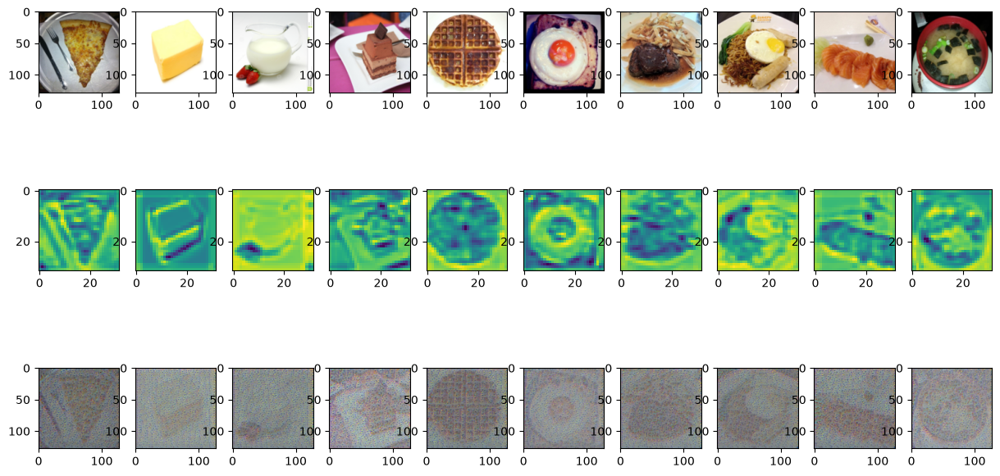
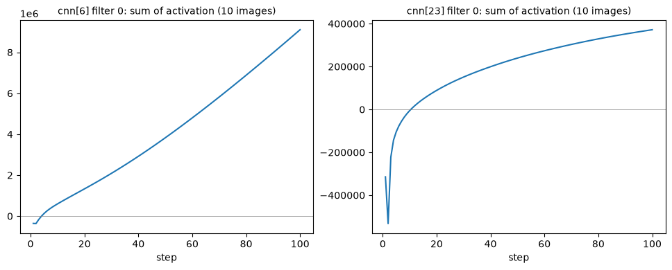
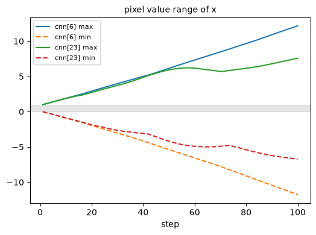
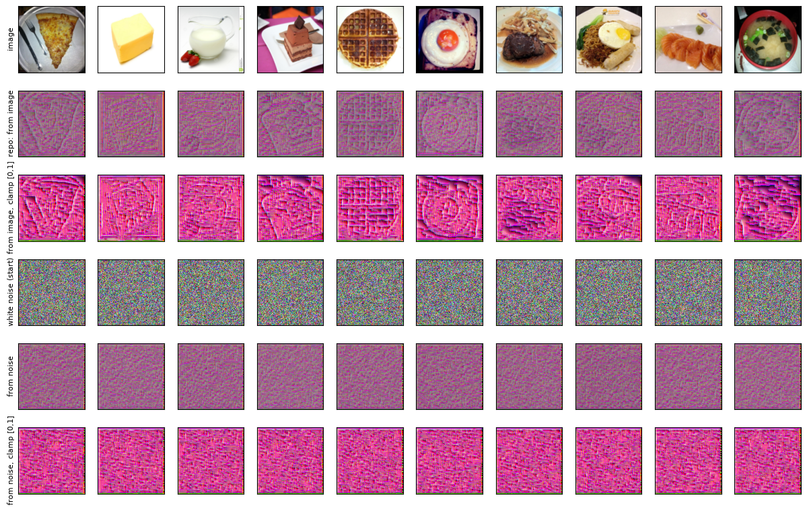
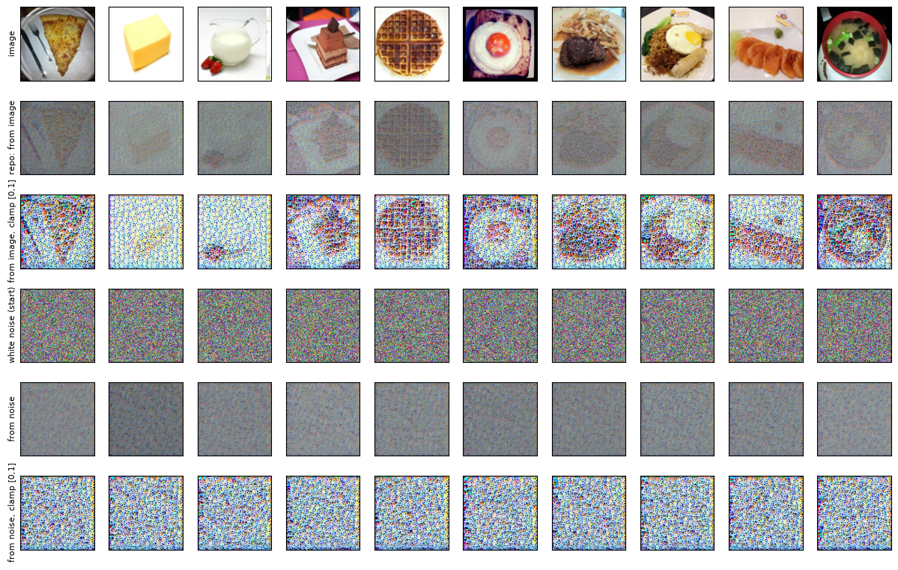
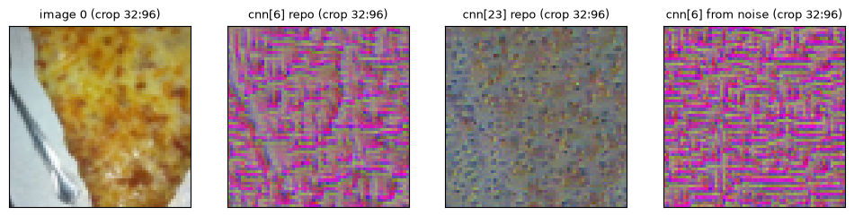
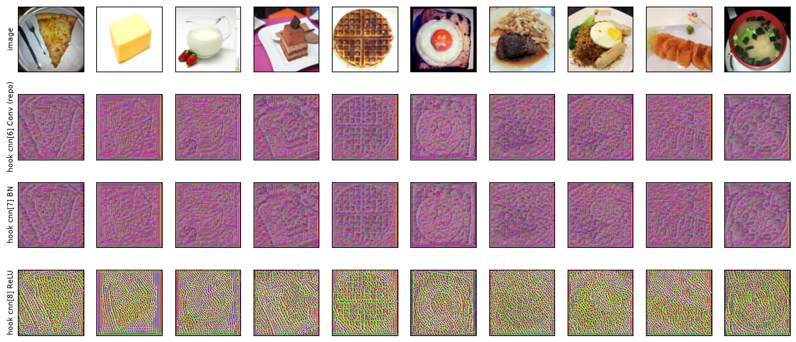

4.1 起點：filter_cnn6.png 與 filter_cnn23.png
第 0 章 0.5 節執行 explain_cnn.py 後，stdout 的第 7、8 行是 saved ./output/filter_cnn6.png 與 saved ./output/filter_cnn23.png。這兩行來自同一個函式 filter_explain 被主程式呼叫兩次（第 1 章 1.5 節）：
filter_explain(model, images, cnnid=6)
filter_explain(model, images, cnnid=23)先看第一張：

filter_cnn6.png：第一列原圖；第二列是 cnn[6] 第 0 個 filter 對原圖的輸出（filter activation）；第三列是優化 100 步之後、讓這個 filter 輸出變大的圖（filter visualization）。只用眼睛看：
- 第二列是藍綠色的底，物體的邊緣像浮雕一樣，一側亮（黃綠）、一側暗（深藍）：奶油塊的稜線、鬆餅的格子、荷包蛋的圓圈、披薩旁的叉子都看得出來。注意它的配色和第 3 章的熱圖不同，不是黑紅黃，4.5 節會說明這是哪一種色表、為什麼。
- 第三列是洋紅色的細紋鋪滿整張，紋理底下還隱約看得到原圖的輪廓：圖 0 的披薩三角形、圖 4 的鬆餅格子、圖 5 荷包蛋的圓。有幾張的最右邊有一條橘紅色的直條。
第二張是同一件事換到比較深的一層：

filter_cnn23.png：同樣三列，換成 cnn[23] 的第 0 個 filter。第二列只有 32×32 格，所以看起來一格一格的（座標軸刻度只標到 20）。第二列是 32×32 的方格（注意座標軸的刻度只標到 20，不是第一列的 100：它只有 32 格），黃綠色為主，物體輪廓的地方有深藍色的線條或區塊：披薩三角形的邊、奶油塊的方框、荷包蛋的同心圓、湯碗的圓。第三列整體偏灰，有細小的彩色點狀紋理，原圖的輪廓比圖 4.1 的第三列更清楚一些（披薩、鬆餅、荷包蛋、生魚片）。
方法的名字
這個方法在投影片和程式裡的名字不一樣。投影片第 10 頁的標題是 Filter Visualization，全部的文字只有這幾行（用 PDF 文字擷取工具抽出，逐字照錄）：
Filter Visualization
Question 14 to 17
● Use Gradient Ascent method to find the image that activates the selected
filter the most and plot them (start from white noise).
Ref: https://reurl.cc/mGZNbA直譯是：「用 Gradient Ascent 方法，找出讓選定的 filter 最興奮（activate 最多）的圖片並畫出來（從白雜訊開始）。」最後一行的短網址指到哪裡，本書沒有查證。程式的段落標題則寫 Filter Explanation：
"""## Filter Explanation (Q14~17)
- Filter activation: pick up some images, and check which part of the image activates the filter
- Filter visualization: look for which kind of image can activate the filter the most
A forward hook grabs the output of an intermediate CNN layer without changing forward().
"""這段 docstring 把 Filter Explanation 拆成兩件事，正好對應圖 4.1 的第二、三列：
- Filter activation（第 158 行）：拿幾張圖，看圖上哪些部分讓這個 filter 有反應。這是第二列。
- Filter visualization（第 159 行）：找出「什麼樣的圖」最能讓這個 filter 有反應。這是第三列，也是投影片第 10 頁講的那件事。
本書沿用程式的標題，把整個方法叫做 Filter explanation（目錄頁也是這樣稱呼），投影片的 Filter visualization 是其中的第二步。第 161 行說的 forward hook 是本章的第一個新工具，4.3 節介紹。
關於作業題目：Q14–17 的題目本身在 Gradescope 上，不在 repo 裡（第 0 章 0.1 節〈30 題在問什麼〉），本書不逐題作答，而是把回答這類問題需要的觀念與觀察講清楚。投影片的「從白雜訊開始」和程式不同，4.9 節實測兩者的差別。
4.2 cnn[6] 與 cnn[23] 是哪一層
第 0 章 0.2 節的逐層表先標過這兩列：cnn[6] 是 stage 1 的第 3 個卷積層，cnn[23] 是 stage 3 的第 2 個卷積層。現在回到 model.py 對照一次，因為本章的結論有一半取決於「它們是卷積層本身，不是 ReLU 之後」：
cnn_list = []
cnn_list += stack_blocks(3, 128, 3)
cnn_list += stack_blocks(128, 128, 3)
cnn_list += stack_blocks(128, 256, 3)
cnn_list += stack_blocks(256, 512, 1)
cnn_list += stack_blocks(512, 512, 1)
self.cnn = nn.Sequential(*cnn_list)每次 stack_blocks 產生若干組「Conv、BN、ReLU」三層，最後補一個 MaxPool（第 0 章 0.2 節）。全部倒進一個 nn.Sequential，從 0 開始編號，所以可以這樣數：
- 第 27 行（stage 1）產生 cnn[0]–[9]：Conv 是 0、3、6，BN 是 1、4、7，ReLU 是 2、5、8，MaxPool 是 9。cnn[6] 是第 3 個 Conv，
Conv2d(128, 128, 3×3, stride 1, padding 1)，緊接著是 cnn[7]BatchNorm2d(128)、cnn[8]ReLU()。輸出形狀(N, 128, 128, 128)：128 個 filter，每個的 activation 是 128×128。 - 第 28 行（stage 2）是 cnn[10]–[19]；第 29 行（stage 3）產生 cnn[20]–[29]，Conv 是 20、23、26。cnn[23] 是 stage 3 的第 2 個 Conv，
Conv2d(256, 256, …)，後面接 cnn[24]BatchNorm2d(256)、cnn[25]ReLU()。這時圖已經過兩次 MaxPool，輸出形狀(N, 256, 32, 32)。
以上的層名是本書另外把 model.cnn[i] 逐一印出確認的。程式只看每一層的第 0 個 filter（4.5 節的 filterid=0），它的權重是 cnn[6].weight（形狀 (128, 128, 3, 3)）的第 0 塊，形狀 (128, 3, 3)：一個 128 通道 × 3 × 3 的權重塊，對應第 0 章說的「filter 是 c_in × 3 × 3 的權重塊」。
Conv 的輸出有正有負
因為 hook 掛在 Conv 本身，抓到的是還沒經過 BN、ReLU 的值。ReLU 會把負數變成 0，但 Conv 的輸出沒有這個限制。本書把 10 張原圖送進模型，同時抓了 filter 0 在 Conv、BN、ReLU 三個位置的輸出：
| 位置 | 最小值 | 最大值 | 平均 | < 0 的比例 | = 0 的比例 |
|---|---|---|---|---|---|
| cnn[6] Conv | −53.050 | 48.331 | −2.172 | 0.693 | 0 |
| cnn[7] BN | −6.949 | 5.848 | −0.527 | 0.778 | 0 |
| cnn[8] ReLU | 0 | 5.848 | 0.182 | 0 | 0.778 |
| cnn[23] Conv | −175.011 | 33.615 | −30.689 | 0.911 | 0 |
| cnn[24] BN | −3.823 | 2.277 | 0.397 | 0.286 | 0 |
| cnn[25] ReLU | 0 | 2.277 | 0.592 | 0 | 0.286 |
（10 張圖、filter 0 的所有位置一起統計；cnn[6] 每張 128 × 128 個值，cnn[23] 每張 32 × 32 個。）讀這張表：
- Conv 的輸出大部分是負的：cnn[6] 有 69.3%、cnn[23] 有 91.1% 的值小於 0。把每張圖 filter 0 的 activation 加總，10 張全部是負數，例如 cnn[6] 圖 0 是 −31,896、圖 1 是 −44,248；10 張合計 −355,931。cnn[23] 的 10 張合計是 −314,252。這兩個合計數 4.6 節會再出現：它們就是優化的起點。
- ReLU 之後就沒有負數了：小於 0 的部分全部變成 0（「= 0 的比例」剛好等於 BN 那一列「< 0 的比例」）。
那麼「讓 Conv 的輸出最大」和「讓 BN 或 ReLU 之後的輸出最大」是同一件事嗎？推論模式下，BN 對每個通道做的是一個固定的一次函數：減掉長期平均（running_mean）、除以長期標準差（running_var 開根號），再乘上倍率 γ、加上平移 β（第 0 章 0.2 節）。從 checkpoint 讀出通道 0 的這四個數：
| BN 層（通道 0） | γ（倍率） | β（平移） | running_mean | running_var |
|---|---|---|---|---|
| cnn[7]（接在 cnn[6] 後） | 1.2184 | −0.5347 | −2.2347 | 93.1679 |
| cnn[24]（接在 cnn[23] 後） | 0.9297 | 0.0824 | −41.4389 | 1011.2743 |
兩個 γ 都是正的，所以這個一次函數是遞增的：Conv 的輸出越大，BN 的輸出也越大，總和之間只差一個正的倍數和一個常數。因此最大化 Conv 輸出的總和，等同於最大化 BN 輸出的總和。但不等同於最大化 ReLU 之後的總和：ReLU 把負的值截成 0，那些位置不管再怎麼負，對總和的貢獻都是 0。這一段是由公式推得的；本書事後把 hook 改掛在 cnn[7]（BN）和 cnn[8]（ReLU）實測過，結果和這個推論一致，放在 4.9 節最後。
（順帶驗算表中一個數：cnn[6] 最小值 −53.050 經過 cnn[7]，(−53.050 + 2.2347) ÷ √93.1679 × 1.2184 − 0.5347 ≈ −6.949，正好是 BN 那一列的最小值。BN 的分母還有一個極小的 ε 防止除以 0，這裡可以忽略。手算。）
一格 activation 看得到多大一塊：receptive field
第二列的每一格（一個 activation 值）是由原圖的哪些像素算出來的？一個 3×3 卷積的輸出只看輸入的 3×3 一小塊；但 cnn[6] 前面已經有 cnn[0]、cnn[3] 兩個卷積，每疊一層，看得到的範圍就向外擴一圈。一個 activation 在原圖上「看得到」的範圍，叫做它的 receptive field（感受野）。
本書直接量：對 filter 0 正中間那一格的 activation 取輸入的梯度，梯度不是 0 的像素，就是它看得到的像素（第 3 章 3.2 節：梯度不是 0，代表那個像素一動，這個值就跟著變）。
- cnn[6] 的 (64, 64) 只依賴原圖 rows 61..67、cols 61..67，也就是 7×7 個像素。
- cnn[23] 的 (16, 16) 依賴 rows 47..84、cols 47..84，38×38。
這兩個數也可以手算。先定義「步距」：這一層相鄰兩格 activation，在原圖上相隔幾個像素。卷積（stride 1）不改變步距；MaxPool 把 2×2 格併成 1 格，步距乘 2。3×3 卷積讓每格多看左右各 1 格，換算成原圖就是兩邊各加 1 個步距；MaxPool 的 2×2 格多看 1 格，加 1 個步距。所以：每經過一個 3×3 卷積，範圍加「2 × 目前的步距」；每經過一個 MaxPool，範圍加「1 × 目前的步距」，步距再乘 2。cnn[6] 前有 3 個卷積（含它自己），步距 1：1 + 2 + 2 + 2 = 7。cnn[23] 則是 7，經過 MaxPool 加 1 變 8、步距變 2；stage 2 三個卷積各加 4 變 20；MaxPool 加 2 變 22、步距變 4；stage 3 的 cnn[20]、cnn[23] 各加 8，得 38，和實測一致。
這解釋了兩張圖第二列的差別：cnn[6] 的每一格只看 7×7 的小範圍，所以畫出來的是細細的邊緣；cnn[23] 的每一格看 38×38，大約是原圖邊長的 30%，所以反應的是比較大塊的形狀，而且它只有 32×32 格，畫成和原圖一樣大時就變成方格。
4.3 forward hook：不改 forward，拿到中間層
模型的 forward（model.py:42–45）只回傳最後的 logits，中間 38 層的輸出算完就丟了。想看 cnn[6] 的輸出，一種做法是改寫 forward；第 161 行的 docstring 說的是另一種：forward hook。
hook（掛勾）是「事先登記、事件發生時被呼叫」的函式。PyTorch 的每一個層（nn.Module）都可以用 register_forward_hook(hook) 登記一個 forward hook：之後每次這一層做完 forward，PyTorch 就會呼叫 hook(module, input, output)，三個參數依序是這一層本身、這一層收到的輸入（一個 tuple）、這一層算出的輸出。hook 如果回傳一個值，那個值會取代這一層的輸出；不回傳（回傳 None）就什麼都不改，模型照常往下算。register_forward_hook 回傳一個 handle（把手），呼叫 handle.remove() 就把這個 hook 拿掉。
程式的寫法：
layer_activations = None
def filter_explanation(x, model, cnnid, filterid, iteration=100, lr=1):
# x: input image
# cnnid: cnn layer id
# filterid: which filter
model.eval()
def hook(model, input, output):
global layer_activations
layer_activations = output
hook_handle = model.cnn[cnnid].register_forward_hook(hook)
# When the model forwards through the layer[cnnid], it calls the hook,
# which saves the output of the layer[cnnid]
# Filter activation: x passing the filter will generate the activation map
model(x.cuda()) # forward
# Pick up the activation map of the filter given by filterid
filter_activations = layer_activations[:, filterid, :, :].detach().cpu()- 第 164 行在函式外面建立一個模組層級的變數
layer_activations，先設成None。它是 hook 和函式本體之間傳遞資料的管道。 - 第 171–173 行是 hook 本身：把這一層的輸出存進
layer_activations，沒有return，所以不改輸出。第一個參數名叫model，但 PyTorch 傳進來的是 hook 掛的那一層（model.cnn[cnnid]），不是整個模型；hook 也沒有用到它。 - 第 172 行
global layer_activations：Python 的規則是，在函式裡對一個名字賦值，預設會建立一個只屬於這個函式的區域變數，函式結束就消失。global宣告「這個名字指的是模組層級那一個」，第 173 行的賦值才會寫到第 164 行建立的變數裡。少了這一行，hook 存的東西在 hook 結束時就丟了，第 183 行讀到的仍是None。本書實測拿掉第 172 行再跑filter_explain(model, images, cnnid=6)，錯誤訊息的最後一行是TypeError: 'NoneType' object is not subscriptable，出錯的位置就是取 activation 的那一行（拿掉一行之後，它從第 183 行變成第 182 行）。「not subscriptable」的意思是「不能用[ ]取值」：None沒有[:, 0, :, :]這種操作。 - 第 175 行把 hook 登記在
model.cnn[cnnid]上，也就是 cnn[6] 或 cnn[23] 這個 Conv 層。 - 第 169 行
model.eval()：和每個解釋方法一樣先切到推論模式（第 1 章 1.7 節）。這一章它特別重要，4.7 節會用到「BN 用固定的長期平均」這件事。 - 第 180 行做一次完整的 forward。回傳的 logits 沒有人接；這行的目的只是讓 hook 被呼叫一次。forward 經過 cnn[6] 時，hook 把
(10, 128, 128, 128)的輸出存進layer_activations，然後模型照常算完剩下的 31 層和 fc。 - 第 183 行
[:, filterid, :, :]取出第 1 維（通道）的第filterid個，也就是第 0 個 filter 的 activation，形狀(10, 128, 128)（cnn[23] 是(10, 32, 32)）。.detach().cpu()把它從計算記錄中切開、搬回 CPU（第 3 章用過同樣的寫法）。「計算記錄」指 autograd（PyTorch 自動算梯度的機制，第 3 章 3.2 節）在 forward 時為需要梯度的張量記下的每一步運算，backward 就是沿著它往回算；它連同中間結果一起留在記憶體裡，直到沒有張量再連著它。這就是圖 4.1 第二列畫的東西。
整個機制畫成圖：
layer_activations。forward 照樣走到 logits，但後面那一段和 logits 都沒有人用；優化的對象是輸入 x，不是權重。有一件事要留意：hook 一旦登記，會一直留在那一層上，直到被 remove。第 203 行（下一節）就是做這件事，函式最後的註解也寫了「The hook stays registered until removed」。本書實測：filter_explanation 結束後，cnn[6] 上的 forward hook 數量是 0；如果不 remove、連續登記兩次，數量是 2，每次 forward 兩個都會被呼叫；remove 之後才回到 0。
另一件事：hook 被拿掉了，全域變數卻還在。本書在 filter_explanation（cnnid=6）結束後檢查，layer_activations 仍然是最後一次 forward 的輸出：形狀 (10, 128, 128, 128)、在 GPU 上、requires_grad=True（它連著計算記錄）。10 × 128 × 128 × 128 個 float32 大約 84 MB（每個 4 bytes，手算），連同它的計算記錄一起佔著 GPU 記憶體，直到下一次被覆蓋。這是用全域變數傳資料的代價，本章最後的「現在的做法」框有替代寫法。
4.4 用優化器修改「圖片」：filter_explanation 的後半
第 183 行拿到了第二列要畫的東西。函式的後半做 Filter visualization：
# Filter visualization: find the image that can activate the filter the most
x = x.cuda()
x.requires_grad_()
# input image gradient
optimizer = Adam([x], lr=lr)
# Use optimizer to modify the input image to amplify filter activation
for iter in range(iteration):
optimizer.zero_grad()
model(x)
# We want to maximize the filter activation's summation, so we add a negative sign
objective = -layer_activations[:, filterid, :, :].sum()
objective.backward()
optimizer.step()
filter_visualizations = x.detach().cpu().squeeze()
# The hook stays registered until removed
hook_handle.remove()
return filter_activations, filter_visualizations優化器與 Adam
先定義兩個名詞。優化器（optimizer）是 PyTorch 裡負責「根據梯度更新張量」的物件：建立時給它一串要更新的張量；每次呼叫 step()，它讀這些張量的 .grad，往讓 loss 變小的方向改一步；zero_grad() 把這些張量的 .grad 清掉（第 3 章 3.3 節：.grad 是累加的，不清會疊上去）。訓練模型時通常寫 Adam(model.parameters(), lr=...)，交給它的是全部的權重。
Adam 是最常用的優化器之一（第 7 行 from torch.optim import Adam）。它和「直接減掉 lr × 梯度」不同的地方，是替每一個數字各自記兩個移動平均：梯度的移動平均（一階動量），和梯度平方的移動平均（二階動量），更新量大約是「lr × 一階動量 ÷ 二階動量的平方根」。第 1 章 1.2 節在 checkpoint.pth 裡看過這兩份東西（exp_avg、exp_avg_sq），每個權重都多存了兩份一樣大的張量。本章只需要 Adam 的一個性質，4.6 節用實測說明：它的步伐大小主要由 lr（learning rate，學習率）決定，和梯度本身有多大關係不大。
逐行讀
- 第 186 行
x = x.cuda()：和第 3 章 3.3 節一樣，x原本是主程式那份在 CPU 上的images，.cuda()複製一份到 GPU，函式裡的x從此指向新的複本。本書實測：對 CPU 上的張量呼叫.cuda()，每次都回傳新的張量；對已經在 GPU 上的張量呼叫，回傳的是同一個物件。主程式的images在 CPU 上，所以接下來 100 步改的是複本，images不受影響，第二次呼叫（cnnid=23）拿到的仍是原圖。（第 180 行的x.cuda()是另一份複本，用完就丟。） - 第 187 行
x.requires_grad_()：讓 PyTorch 記錄 x 參與的運算，backward 時才算得出 x 的梯度（第 3 章 3.2 節）。 - 第 189 行
Adam([x], lr=lr)：這是本章最關鍵的一行。交給優化器的不是model.parameters()，而是只有[x]一個張量。所以step()只會改 x，模型的權重一個也不會動。lr是呼叫端傳進來的 0.1（第 209 行），不是函式簽名裡的預設值 1。 - 第 192 行
optimizer.zero_grad()清的是 x 的.grad。模型權重的.grad不在這個優化器裡，不會被清掉；backward 時 cnn[0] 到 cnn[6] 的權重也會算出梯度、一直累加（由 autograd 的規則推得，和第 3 章的觀察相同，本章沒有另外量）。它們不影響結果，只是佔記憶體。 - 第 193 行
model(x)：做一次 forward，目的只是讓 hook 把這一次的 cnn[6] 輸出存進layer_activations。和第 180 行不同，這次的 x 需要梯度，所以存下來的輸出連著一條通往 x 的計算記錄。 - 第 196 行：取出第 0 個 filter 的 activation，把 10 張圖、所有位置的值全部加起來，再加一個負號。
- 第 198–199 行：backward 算出 objective 對 x 的梯度，
step()用它更新 x。
第 196 行的負號，就是投影片說的 gradient ascent（梯度上升）。PyTorch 的優化器只會做一件事：沿著梯度的反方向走，讓目標變小（這叫 gradient descent，梯度下降，訓練時就是這樣讓 loss 變小）。這裡想要的是讓 activation 總和變大，所以把目標取負號：讓「負的總和」變小，就是讓總和變大。程式的註解（第 195 行）講的正是這件事。
這個目標要求的是「10 張圖、filter 0 在每一個位置的值，加起來越大越好」。它沒有限制 x 的範圍，也沒有要求 x 看起來像一張圖片；4.6 節會看到，這兩點決定了第三列長什麼樣子。
迴圈結束後：
- 第 200 行
x.detach().cpu()把優化完的圖切開、搬回 CPU，形狀(10, 3, 128, 128)。.squeeze()的作用是去掉長度為 1 的維度，這裡沒有這種維度，所以什麼都不做（只傳一張圖時，它會把批次那一維拿掉；由 PyTorch 的規則推得）。 - 第 203 行把 hook 拿掉（4.3 節）。
注意迴圈的順序：每一步是「forward → 算 objective → backward → 更新 x」，所以第 k 步算出的 objective 是第 k − 1 次更新之後、第 k 次更新之前的值。第 100 次更新後的 x 就是最後的結果，程式沒有再 forward 一次去量它的 activation。本書 4.6 節的表格照這個定義記錄「第 k 步」。
耗時：Filter explanation 這一段在第 0 章 0.5 節的逐段計時裡，cnn[6] 是 2.3 秒、cnn[23] 是 2.9 秒，比 SmoothGrad 的 24.1 秒快得多：只有 101 次 forward、100 次 backward，而且 10 張圖一次算。
4.5 filter_explain：三列怎麼畫
def filter_explain(model, images, cnnid):
filter_activations, filter_visualizations = filter_explanation(images, model, cnnid=cnnid, filterid=0, iteration=100, lr=0.1)
fig, axs = plt.subplots(3, len(images), figsize=(15, 8))
for i, img in enumerate(images):
axs[0][i].imshow(img.permute(1, 2, 0))
# Plot filter activations
for i, img in enumerate(filter_activations):
axs[1][i].imshow(normalize(img))
# Plot filter visualization
for i, img in enumerate(filter_visualizations):
axs[2][i].imshow(normalize(img.permute(1, 2, 0)))
save_fig(fig, f'filter_cnn{cnnid}.png')- 第 209 行：
filterid=0寫死，兩層都只看第 0 個 filter（cnn[6] 有 128 個、cnn[23] 有 256 個，其餘都沒看）。iteration=100、lr=0.1也在這裡指定。 - 第 213 行：第一列原圖，和第 1 章畫
images.png一樣先permute(1, 2, 0)把通道換到最後（第 1 章 1.5 節〈第一張輸出〉）。這裡直接把 PyTorch 張量交給imshow，沒有先轉成 NumPy，也畫得出來。 - 第 216 行：第二列。
filter_activations是第 183 行在優化之前、用原圖算出的 activation，所以第二列和優化無關，回答的是 docstring 的 Filter activation：「原圖哪些地方讓 filter 0 有反應」。每張(128, 128)（cnn[23] 是(32, 32)）各自normalize到 0–1。 - 第 219 行：第三列，優化後的 x，換維度成
(128, 128, 3)後normalize。normalize對傳進去的整個陣列取最大最小值（第 1 章 1.5 節），所以是每張圖的三個通道一起拉到 0–1。這一步對第三列的外觀影響很大，4.8 節細講。
第二列為什麼是藍綠黃：viridis
第 216 行的 imshow 收到的是二維陣列，所以會套用色表（colormap，第 3 章 3.3 節）。但這一行沒有指定 cmap，不像第 3 章 saliency 的第 109 行寫了 cmap=plt.cm.hot。沒有指定時，matplotlib 用預設色表 viridis：0 是深紫色，往上經過藍、藍綠、綠，1 是黃色。這就是圖 4.1、4.2 第二列不是黑紅黃的原因。
附帶一提，imshow 對二維陣列套色表時，預設會把這張圖自己的最小值對到色表的 0、最大值對到 1（matplotlib 的預設規則），不會截斷；所以第 216 行的 normalize 對畫面其實沒有影響，加了也無妨。
用這個色表讀第二列：黃色是這張圖裡 activation 最大（最正）的位置，深紫、深藍是最小（最負）的位置，藍綠色是中間。cnn[6] 第二列大面積是藍綠色，邊緣一側黃綠、一側深藍，看起來像浮雕。本書推測（沒有驗證）filter 0 對某一個方向的亮度變化有反應，有點像邊緣偵測器：亮度往某個方向變化的邊緣得到正值，往反方向變化的得到負值，平坦的區域接近中間值。
因為第 216 行是每張圖各自 normalize，第二列和第 3 章的熱圖一樣，不同圖之間的顏色不能比較：圖 1 的黃和圖 5 的黃，代表的原始數值不同（cnn[6] 每張的最大值從 22.90 到 48.33）。
4.6 100 步裡發生了什麼
程式只畫出最後的結果。本書把同一個優化迴圈複製出來（同樣的 Adam、lr 0.1、100 步、同樣的目標），在每一步記下 filter 0 的總和與 x 的值域：
| 第 k 步 | cnn[6] 總和 | cnn[6] x 值域 | cnn[23] 總和 | cnn[23] x 值域 |
|---|---|---|---|---|
| 1（原圖） | −355,931 | 0.00..1.00 | −314,252 | 0.00..1.00 |
| 2 | −364,330 | −0.10..1.10 | −532,294 | −0.10..1.10 |
| 3 | −170,234 | −0.20..1.20 | −222,235 | −0.20..1.20 |
| 6 | 244,823 | −0.50..1.50 | −76,504 | −0.50..1.50 |
| 10 | 598,093 | −0.90..1.90 | −5,259 | −0.90..1.87 |
| 20 | 1,331,296 | −1.94..2.91 | 88,859 | −1.87..2.73 |
| 50 | 3,828,020 | −5.37..6.15 | 239,616 | −4.18..5.93 |
| 100 | 9,102,480 | −11.77..12.17 | 371,812 | −6.71..7.58 |
（「第 k 步」是第 k 次迴圈 forward 時的值，也就是第 k 次更新之前，4.4 節。總和是 10 張圖合計；第 1 步就是 4.2 節原圖的總和。）本章另外量的數字都來自 repo 裡的 docs/tools/hw09_ch04_filter.py：在 HW09/ 裡執行 ../.venv/bin/python ../docs/tools/hw09_ch04_filter.py（需要 GPU、checkpoint.pth 與 food/，和第 0 章 0.5 節相同），它把本章各表的數字印到 stdout，並重新產生本章的 ch04_*.png 圖。輸出的尾數每次不同（4.7 節），所以本書不附逐字輸出。

看圖：
- cnn[6]（左）：前 2 步略降，之後一路上升，到第 100 步還在加速（曲線往上彎），完全沒有收斂的跡象。
- cnn[23]（右）：第 2 步跌到最低，約 −53 萬，比原圖還低；之後快速回升，約第 10–11 步過 0，然後越升越慢，到 100 步大約是 37 萬。
第 2 步不升反降，是 gradient ascent 的第一步反而讓目標變差。本書推測原因在 Adam 的第一步太大：下一小節會看到，第 1 次更新讓每一個像素都整整移動 0.1，而梯度只描述「x 附近」的變化方向，一次走這麼遠，就不保證目標會變好。
x 的值域畫成圖：

前大約 20 步，最大值與最小值都以每步約 0.1 的速度直線往外走（表中第 2、3、6、10 步的值域剛好是 −0.1..1.1、 −0.2..1.2、 −0.5..1.5、 −0.9..1.9）。cnn[6] 一直直線走到 ±12；cnn[23] 在 40 步之後變慢，甚至一度往回。到第 100 步，cnn[6] 的值域是 −11.77..12.17，原圖只佔 [0, 1] 那一條細細的灰帶。
Adam 的第 1 步：每個像素都剛好移動 0.1
為什麼值域每步剛好擴張 0.1？本書把第 1 步拆開量（cnn[6]）：
- 第 1 步每個像素梯度的絕對值，最小 9.06 × 10−6、中位數 11.33、最大 171.1，相差 7 個數量級。
- 但第 1 次更新後，每個像素移動的量 |Δx| 最小 0.0999、中位數 0.1000、最大 0.1000，100% 的像素都在 0.1 ± 0.001 之內。
梯度差了 7 個數量級，移動量卻全部一樣。這是 Adam 的設計：第 1 步時，一階動量就是梯度 g 本身，二階動量就是 g2，所以更新量是
也就是每個像素都往「讓總和變大」的方向，走整整一個 lr，不管梯度本身多大多小。（式子是由 Adam 的定義推得，數字是實測。梯度最小的像素 9.06 × 10−6 仍遠大於 ε，所以 |Δx| 最小也有 0.0999，手算 9.06 × 10−6 ÷ (9.06 × 10−6 + 10−8) × 0.1 ≈ 0.0999。）原圖的值在 0 到 1 之間，原本是 0 的像素只要梯度要它變小，一步就到 −0.1；原本是 1 的，一步就到 1.1。只要同一個像素的梯度方向一直不變，之後每一步也大約走 lr，值域就每步擴張 0.1。
到了後段，cnn[6] 的速度其實略超過 0.1：第 50 步到第 100 步，最大值從 6.15 走到 12.17，平均每步約 0.12（手算）。Adam 的步伐只是「大約」lr，不是上限。
這也說明了為什麼 x 會跑出 [0, 1]：目標裡沒有任何東西要求 x 留在 [0, 1]，而 Adam 每步都讓幾乎每個像素整整移動 lr。100 次更新後，cnn[6] 的 x 有 90.3% 的值在 [0, 1] 之外，和原圖的平均絕對差是 3.175；cnn[23] 是 57.5% 在外、平均差 0.576。
兩次量到的數字不一樣
上面的表是本章為了記錄每一步而另外跑的一次（hw09_ch04_filter.py，以下稱第二次）。教學大綱和本書最初的記錄來自另一次執行：本書用 repo 裡的另一支工具 docs/tools/hw09_facts.py 一次量完全書的數字，它複製了同一個優化迴圈、記下第 1、2、10、50、100 步的總和，也就是產生圖 4.1、4.2 的那一次（2026-10-03；本書附的圖檔放在 docs/HW09/img/，是那一次執行的輸出，第 0 章 0.6 節）。兩次的數字在第 4–5 位不同：
| 第一次（產生圖 4.1、4.2） | 第二次（本章逐步記錄） | |
|---|---|---|
| cnn[6] 第 10 步總和 | 598,087 | 598,093 |
| cnn[6] 第 50 步總和 | 3,828,560 | 3,828,020 |
| cnn[6] 第 100 步總和 | 9,108,426 | 9,102,480 |
| cnn[6] 100 次更新後的 x 值域 | −11.87..12.32 | −11.90..12.31 |
| cnn[23] 第 100 步總和 | 371,643 | 371,812 |
| cnn[23] 100 次更新後的 x 值域 | −6.44..7.49 | −6.75..7.64 |
每一欄是同一次執行裡的數字，兩欄不要混著讀。注意「第 100 步」和「100 次更新後」是兩個時間點：第 100 步的值域 −11.77..12.17（上一張表）是第 99 次更新後的 x，再更新一次才是 −11.90..12.31。第二次執行另外在 100 次更新後多做了一次 forward（程式沒有做），量到的 cnn[6] 總和是 9,216,263（每張 874,798–976,690），cnn[23] 是 373,688。
數字為什麼每次不同，下一節說明。重點是：你自己跑出來的數字也會和這兩欄都不完全一樣，但量級、趨勢（cnn[6] 一路加速上升、cnn[23] 先跌後升）、值域大約 ±12 與 ±7，都應該一致。
優化後的圖，模型認成什麼
把 100 次更新後的 x 直接送進模型（第二次執行）：cnn[6] 的 10 張，3 張（圖 0、4、5）被判成 Vegetable/Fruit，另外 7 張被判成 Dessert；cnn[23] 的 10 張全部被判成 Dessert。原圖是 10 張全對的（第 1 章 1.6 節）。優化只在乎 filter 0 的總和，不在乎模型的最後答案，所以答案被改掉並不奇怪；這也再次提醒，第三列是「讓一個 filter 興奮的圖」，不是「模型眼中的麵包」。
4.7 每次跑都不一樣，單張和批次也不一樣
第 0 章 0.6 節說過：同一台機器重跑，filter_cnn6.png、filter_cnn23.png 只有極細微的差異，肉眼看不出來（GPU 上的運算順序不保證每次相同，累加出來的浮點數尾數會變；explain_cnn.py 沒有打開 PyTorch 要求確定性運算的設定）。但如果不看 PNG、直接看 x 的數值，差異其實不小。本書在同一個程式裡從原圖連跑兩次同樣的 100 步，比較圖 0 的結果：
| x 差異最大 | x 差異平均 | normalize 後差異最大 | normalize 後差異平均 | |
|---|---|---|---|---|
| cnn[6] | 5.24 | 0.199 | 0.228 | 0.0086 |
| cnn[23] | 2.06 | 0.045 | 0.199 | 0.0107 |
cnn[6] 有 56% 的值兩次差超過 0.1，最大差了 5.24。但 normalize 之後（第三列實際畫的是這個），平均差異不到 0.01，和第 0 章「肉眼看不出差異」的觀察一致：兩者比的是不同的東西。
差異從哪裡來？浮點數尾數的差異本來極小，但本書推測（沒有驗證）Adam 把它放大了：上一節看到，Adam 的步伐幾乎和梯度大小無關，只看正負號。梯度接近 0 的像素，只要尾數的差異讓正負號翻過來，這一步就整整往反方向走 lr；100 步累積下來，差異就變大了。
10 張一起優化，和一張一張優化
程式把 10 張圖放在同一個 x 裡一起優化，目標是 10 張的總和。這會不會讓 10 張圖互相影響？用數學回答：不會。
- 推論模式下（第 169 行的
model.eval()），BN 用的是固定的長期平均，不是「這一批」的統計量，所以每張圖的 forward 只和自己有關（第 1 章 1.7 節：train 模式的 BN 才會用這一批的統計量）。 - 目標是 10 張各自總和的相加，對第 i 張圖的像素取偏微分，只有第 i 張自己的那一項有貢獻。
- Adam 對每一個數字各自計算，不會把不同像素混在一起。
所以單獨優化圖 0，和在 10 張的批次裡優化圖 0，數學上應該得到完全相同的結果。實測卻不同：cnn[6] 最大差 17.85、平均 1.446，94% 的值差超過 0.1；cnn[23] 最大 4.83、平均 0.296。本書推測（沒有驗證）原因和上面相同：GPU 會依批次大小選用不同的卷積計算方法，梯度因此有極小的差異，再被 Adam 放大。第 1 章〈同一張圖，logit 的小數第 3 位會變〉看過同一種現象的小規模版本。
結論要分清楚：「10 張一起優化會互相影響」是錯的；「10 張一起優化和一張一張優化，結果數值不同」是對的，但原因是數值計算，不是方法本身。
4.8 像素跑出 [0, 1] 之後怎麼畫
4.6 節的 x 跑到大約 ±12，而 imshow 畫彩色圖時，浮點數要在 0–1 之間，超出的會被截斷（第 1 章 1.5 節）。第 219 行的解法是 normalize：把每張圖（三個通道一起）線性拉回 0–1。這樣畫得出來，代價是原圖的部分被壓扁了。以 cnn[6] 的圖 0 為例，它優化後的值域是 −11.07..12.05（這是圖 0 單張的範圍，和 4.6 節 10 張合起來的值域不同）：
具體的數字（第二次執行）：
| 圖 | 優化後的值域 | 原本的 0 → | 原本的 1 → | 還在 [0, 1] 裡的比例 |
|---|---|---|---|---|
| cnn[6] 圖 0 | −11.07..12.05 | 0.479 | 0.522 | 10.2% |
| cnn[6] 圖 5 | −11.48..11.03 | 0.510 | 0.554 | 10.1% |
| cnn[23] 圖 0 | −4.10..6.80 | 0.376 | 0.468 | 52.6% |
| cnn[23] 圖 5 | −6.75..6.87 | 0.496 | 0.569 | 44.6% |
cnn[6] 的圖 0，原圖從最暗到最亮的變化，在畫出來的圖上只佔 0.479 到 0.522；而 x 裡還留在 [0, 1] 的值只剩約 10%。這就是圖 4.1 第三列的原圖輪廓只剩隱約可見、顏色也不鮮豔的原因：原圖的資訊其實還在 x 裡（它是起點），但被新增的大數值擠到幾乎看不出來。cnn[23] 的值域小一些，原圖分到的範圍是 cnn[6] 的兩倍左右（0.376–0.468），還在 [0, 1] 的值也有一半左右，所以圖 4.2 第三列的原圖輪廓比圖 4.1 清楚。
另一個畫法是在優化過程中就不讓 x 跑出 [0, 1]：每一步 step() 之後，把小於 0 的值設成 0、大於 1 的值設成 1。這個操作叫 clamp（夾住），PyTorch 寫成 x.clamp_(0, 1)（結尾底線＝就地修改）。程式沒有這樣做；下一節把它和「從白雜訊出發」一起實測。
4.9 從原圖還是從白雜訊出發
投影片第 10 頁寫「start from white noise」（從白雜訊開始），程式卻從原圖開始：第 209 行把 images 傳進去，第 186 行的 x 就是原圖的複本。原版 notebook 也是這樣寫的。這是教學大綱〈讀 code 不盡信文件〉的第 5 項：從原圖而不是白雜訊出發，而且沒有把 x 限制在 [0, 1]。
白雜訊在這裡指每個像素各自獨立、隨機取一個 0 到 1 之間的值（均勻分佈）的圖，看起來像電視沒訊號時的雪花。本書用 torch.manual_seed(0) 之後 torch.rand(10, 3, 128, 128) 產生 10 張（torch.rand 產生 0–1 均勻分佈的亂數；torch.manual_seed 固定 PyTorch 的亂數種子，見第 3 章 3.9 節）。白雜訊本身在 cnn[6] filter 0 的總和是 −1,210,640（10 張合計，優化前），也是負的。
本書把「起點」和「要不要 clamp」兩件事各換一次，其他完全照程式（lr 0.1、100 步、同樣的目標），共四種：


100 次更新後再做一次 forward，filter 0 的總和（10 張合計）與 x 的值域：
| 層 | 程式（從原圖） | 從原圖＋clamp | 從白雜訊 | 從白雜訊＋clamp |
|---|---|---|---|---|
| cnn[6] | 9,216,263 （−11.90..12.31） | 926,080 （0..1） | 10,611,874 （−12.21..12.99） | 956,999 （0..1） |
| cnn[23] | 373,688 （−6.75..7.64） | 354,622 （0..1） | 402,245 （−6.37..7.57） | 367,707 （0..1） |
| 和起點的平均絕對差（cnn[6]／cnn[23]） | 3.175／0.576 | 0.352／0.287 | 3.561／0.703 | 0.371／0.353 |
（「程式」那一欄是 4.6 節第二次執行的同一組數字。）
看圖 4.7（cnn[6]）。
- 程式的做法（第二列）：洋紅、綠色的細短橫線與直線交錯，像迷宮一樣鋪滿整張，底下隱約看得到原圖輪廓（披薩三角、鬆餅格子、荷包蛋圓）。最右邊一行有一條橘紅色的直條。
- 從原圖＋clamp（第三列）：同樣的迷宮紋理，但鮮豔得多（亮粉紅），原圖輪廓更清楚，有些圖的角落有深紫色塊。clamp 之後 x 留在 0–1，normalize 不必再壓縮，所以顏色不會被擠成灰色。
- 從白雜訊（第五列）：同樣的迷宮紋理，完全看不出原圖，10 張彼此看起來幾乎一樣。
- 從白雜訊＋clamp（第六列）：同樣的紋理，鮮豔的粉紅。
看圖 4.8（cnn[23]）。程式的做法偏灰、有細小的彩色點狀紋理，原圖輪廓隱約可見；從原圖＋clamp 變成密密麻麻的小圓圈（像一顆顆眼睛，白、藍、紅、黑），食物的輪廓（披薩、鬆餅、荷包蛋、湯碗）很清楚；從白雜訊是一片灰，紋理很淡，10 張相近；從白雜訊＋clamp 是滿版的小圓圈。
從這兩張圖和表可以讀出幾件事：
- 紋理是 filter 的，輪廓是起點的。不論從哪裡出發，同一層長出的紋理是同一種（cnn[6] 是迷宮般的短線，cnn[23] 是小圓圈）。從白雜訊出發時沒有原圖可以殘留，10 張就幾乎一樣；從原圖出發時，紋理疊在原圖的輪廓上。所以圖 4.1 的第三列其實混了兩件事：filter 0 喜歡的圖案，加上起點留下的原圖。投影片要的「讓 filter 最興奮的圖」，比較接近從白雜訊出發的那一列。
- 從白雜訊出發的 10 張「看起來」幾乎一樣，數值上卻差很多。10 張結果兩兩之間的平均絕對差，cnn[6] 是 3.931、cnn[23] 是 0.924，比起點雜訊彼此之間的 0.333 還大；這是因為 x 被放大到 ±12 左右，數值上的差也跟著放大，normalize 之後才看起來相近。
- clamp 對 cnn[6] 的總和影響很大，對 cnn[23] 很小。cnn[6] 限制在 [0, 1] 時，總和只有不限制的大約 1/10（926,080 對 9,216,263）；cnn[23] 差不多（354,622 對 373,688）。本書推論：不限制時，把像素值整體放大就能讓 cnn[6] 的 activation 跟著變大，所以 4.6 節的總和一路加速上升、沒有收斂；clamp 拿走了這條「放大數值」的捷徑，總和就只能靠「排出對的圖案」來提高。cnn[23] 的總和在不限制時也只多一點點，表示對它來說，放大數值的效果有限（和圖 4.4 右邊越升越慢一致）。
- 從白雜訊出發的總和比從原圖還高（cnn[6] 10,611,874 對 9,216,263；cnn[23] 402,245 對 373,688），雖然白雜訊的起點（−1,210,640）比原圖（−355,931）低得多。原圖的結構對「讓 filter 0 興奮」來說不是助力。
放大來看紋理：

cnn[6] 的紋理是幾個像素寬的洋紅、綠色短線段，橫、直交錯；從白雜訊出發的 cnn[6] 和從原圖出發的，紋理是同一種。cnn[23] 是灰底上更細碎的彩色點。cnn[6] 的線段只有幾個像素寬，和 4.2 節 cnn[6] 的 receptive field 只有 7×7 相符：每一格 activation 只看得到這麼小的範圍，能「最大化」的也只有這種尺度的圖案（這是本書把兩個觀察放在一起的讀法，沒有另外驗證）。
lr 用函式的預設值 1 會怎樣
filter_explanation 的簽名寫 lr=1，但第 209 行傳的是 0.1。本書也試了 lr = 1（從原圖、不限制、100 步；和上表一樣是第二次執行、100 次更新後再 forward 量的）：cnn[6] 的總和變成 103,450,840，x 的值域 −119.74..120.75；cnn[23] 是 323,961，x −35.40..68.60。cnn[6] 的值域大約是 lr 0.1 時的 10 倍，正好對應 Adam「每步大約走 lr」的性質；cnn[23] 的總和反而比 lr 0.1 時（373,688）還低，步子太大不一定比較好。
hook 掛在 BN 或 ReLU 之後會怎樣
4.2 節推論：BN 的 γ > 0，所以把 hook 從 cnn[6]（Conv）移到 cnn[7]（BN）應該得到同樣的結果；移到 cnn[8]（ReLU）則不是同一個目標。本書把同一個優化迴圈（從原圖、lr 0.1、100 步、filter 0 總和）的 hook 分別掛在這三層，另外記下每一次 cnn[6] Conv 輸出的總和：
| hook 掛在 | 自己那一層 filter 0 的總和 | 同時 cnn[6] Conv 的總和 | x 值域 |
|---|---|---|---|
| cnn[6] Conv（程式） | 9,216,958 | 9,216,958 | −11.95..12.30 |
| cnn[7] BN | 1,122,571 | 9,221,400 | −11.79..12.46 |
| cnn[8] ReLU | 7,199,765 | −26,682,812 | −12.38..13.43 |
（100 次更新後再 forward 量的；這是另一次執行，cnn[6] 那一列和 4.9 節的 9,216,263 在第 4 位不同，原因見 4.7 節。）

- BN 和 Conv 幾乎一樣。第二、三列肉眼看不出差別；normalize 後平均差 0.0315（同一種做法跑兩次的差異是 0.0086，4.7 節）。cnn[6] 的總和也幾乎相同（9,221,400 對 9,216,958）。BN 的總和小很多，只是因為 BN 把數值除以了 √93.17 ≈ 9.65 再乘 γ，不是優化的方向不同。這驗證了 4.2 節的推論。
- ReLU 完全不同。第四列換成了黃綠色、像一串串珠子的斜紋，原圖輪廓也看得到。最明顯的是數字：ReLU 之後的總和是 720 萬，但同一時刻 cnn[6] Conv 的總和卻是 −2,668 萬，比原圖的 −35 萬還負得多；ReLU 的輸出有 56.9% 是 0。也就是說，優化只把一部分位置推成很大的正值，其他位置被 ReLU 截成 0 之後就不再有梯度，Conv 在那裡變得多負都沒有人管。
所以「讓 filter 最興奮」的定義取決於 hook 掛在哪：程式選的是 Conv 本身，等同 BN 之後，但和「ReLU 之後的 activation 最大」是兩回事。
現在的做法
- 不用全域變數傳 hook 的結果：在函式裡建一個字典，hook 裡寫
store['out'] = output（對字典的內容賦值，不需要global）。本書量 4.2 節的數字時就是這樣寫的。資料的生命週期跟著函式走，不會在函式結束後還佔著 84 MB 的 GPU 記憶體。 - 確保 hook 一定被拿掉：把登記之後的程式包在
try: … finally: handle.remove()裡，中途出錯也不會把 hook 留在模型上。 - 只看 activation 的那次 forward 包
torch.no_grad()：第 180 行不需要梯度，包起來就不會建出用不到的計算記錄。 - 先凍結權重：
model.requires_grad_(False)之後 backward 只算 x 的梯度，權重的.grad不會累加。 - 只要中間層時，不必整個模型跑完：torchvision 有
create_feature_extractor，可以指定要哪幾層的輸出（本書沒有用它跑過這份作業）。 - 產生「好看」的 filter visualization：實務上通常從雜訊出發、限制像素範圍，並在優化中加上正則化或隨機的小位移、縮放，讓結果不被高頻的細紋主導（延伸閱讀的 Distill 文章有完整討論；本書沒有實測這些做法）。
- 要可重現：PyTorch 提供
torch.use_deterministic_要求確定性的運算（本書沒有實測它對 4.7 節的差異有沒有效）。algorithms(True)
本章重點
- 程式的段落標題叫 Filter Explanation，分兩步：Filter activation（原圖哪裡讓 filter 有反應，圖的第二列）與 Filter visualization（什麼圖最讓 filter 有反應，第三列，也就是投影片第 10 頁的名稱）。兩層都只看第 0 個 filter。
- cnn[6] 是 stage 1 的第 3 個 Conv、cnn[23] 是 stage 3 的第 2 個 Conv，hook 掛在 Conv 本身，BN、ReLU 之前，所以 activation 有正有負，原圖的總和是負的（−355,931、−314,252）。BN 的 γ 都 > 0，最大化 Conv 輸出等同最大化 BN 輸出，但不等同 ReLU 之後（公式推得，4.9 節實測確認：hook 改掛 ReLU 時，Conv 的總和反而變成 −2,668 萬）。receptive field 分別是 7×7 與 38×38。
register_forward_hook讓一層在 forward 後呼叫 hook(module, input, output)；hook 用global把輸出存進模組層的layer_activations；hook_handle.remove()拿掉 hook，但全域變數仍留著最後一次的輸出（約 84 MB）。Adam([x], lr=0.1)只更新圖片 x，權重不動；目標取負號，讓「只會往下走」的優化器做 gradient ascent。- 第二列是優化之前的 activation，沒有指定 cmap，用 matplotlib 預設的 viridis（深紫 → 藍綠 → 黃）。
- Adam 第 1 步讓每個像素都剛好移動 lr（0.1），前 20 步值域每步擴張 0.1。100 步後 cnn[6] 的 x 大約在 ±12（兩次執行分別是 −11.87..12.32 與 −11.90..12.31），總和還在加速上升；GPU 運算的細微差異會被放大，每次跑的數字都不同，單張和批次也不同（數學上應相同）。
- 第 219 行的 normalize 把 ±12 拉回 0–1，原圖的 [0, 1] 只剩 4% 的範圍（cnn[6] 圖 0），第三列因此偏灰、原圖淡淡的。每步 clamp 到 [0, 1] 會讓顏色鮮豔、cnn[6] 的總和只剩約 1/10。
- 投影片寫從白雜訊出發，程式從原圖出發。從白雜訊出發的 10 張看起來幾乎一樣、看不出原圖，紋理和從原圖出發的是同一種：第三列混了「filter 喜歡的圖案」和「起點留下的原圖」。
自我測驗
1. 圖 4.1 第二列的顏色為什麼是藍綠黃，而不是第 3 章 saliency map 那種黑紅黃？第二列畫的是優化前還是優化後的東西？
第 216 行的 imshow(normalize(img)) 收到二維陣列，會套色表，但沒有指定 cmap，所以用 matplotlib 的預設 viridis（深紫 → 藍綠 → 黃）；第 3 章的第 109 行明確指定了 plt.cm.hot。第二列畫的是 filter_activations，在第 183 行用原圖算出，是優化之前的 activation，和後面 100 步的優化無關。
2. 第 189 行如果寫成 Adam(model.parameters(), lr=lr)，會發生什麼事？
優化器拿到的變成模型的權重，step() 會改權重而不是圖片，變成「訓練模型讓 filter 0 對這 10 張圖的輸出變大」，而且會把從 checkpoint.pth 載入的權重改掉，後面的 Integrated Gradients 會用到被改過的模型。x 雖然有 requires_grad_()、也會算出 .grad，但沒有優化器去更新它，第三列畫出來的就是原圖本身（各自 normalize 過，原圖本來就接近 0–1，看起來和第一列幾乎相同）。本書事後實測：cnn[6] 那次呼叫之後，第三列的 x 和原圖逐位元相同；權重則被改得面目全非，cnn[0] 的權重平均改變了 11.2，而它原本的平均絕對值只有 0.18（Adam 每步約走 lr 0.1，100 步就是約 10）。被改的只有 hook 之前、會影響 cnn[6] 輸出的層（cnn[0]、[1]、[3]、[4]、[6] 的 weight 和 bias），BN 的 running 統計不變（推論模式不更新）。cnn[23] 那次呼叫再改掉 stage 1–3 更多層。兩次呼叫之後，模型把 10 張圖全部判成類別 2（Dessert），Integrated Gradients 的最大值從 1–3 變成 1015 的量級，和原模型的 IG 圖相關係數在 ±0.01 之間，也就是完全無關。
3. 為什麼優化後的 x，前 20 步的值域剛好每步往外擴張 0.1？
Adam 的更新量大約是 lr × 一階動量 ÷ √二階動量。第 1 步這兩者就是 g 與 g²，更新量是 lr × g ÷ (|g| + ε) ≈ lr × (g 的正負號)：每個像素都往讓總和變大的方向走整整 0.1，不管梯度多大。實測第 1 步梯度從 9.06 × 10−6 到 171.1，移動量卻全部在 0.1 ± 0.001 之內。之後只要梯度方向不變，每步仍約走 0.1，所以原本是 0 的像素一步到 −0.1、原本是 1 的到 1.1，值域每步擴張 0.1。
4. 同學說：「程式把 10 張圖放在同一批一起優化，它們會互相影響，所以應該一張一張跑。」這句話對嗎？
不對。推論模式下 BN 用固定的長期平均，每張圖的 forward 只和自己有關；目標是 10 張各自總和的相加，第 i 張圖的梯度只來自第 i 張自己；Adam 也是逐個數字計算。所以數學上，一起優化和一張一張優化的結果應該相同。實測兩者的數值確實不同（cnn[6] 圖 0 平均差 1.446），但本書推測那是 GPU 依批次大小選不同計算方法、浮點數尾數不同，再被 Adam 放大，不是圖片之間互相影響。同一批跑兩次也會不同（平均差 0.199）。
5. 想要得到投影片說的「讓 filter 最興奮的圖」，只把第 209 行的 images 換成白雜訊，夠嗎？第三列會長什麼樣子？
換起點就會得到看不出原圖、10 張幾乎一樣的迷宮紋理（圖 4.7、4.8 的 from noise 列），這比較接近投影片要的東西。但 x 仍會跑到約 ±12（cnn[6] −12.21..12.99），normalize 之後整張偏灰。若同時每步 clamp_(0, 1)，顏色會鮮豔得多（from noise, clamp 列），cnn[6] 的總和也從 10,611,874 降到 956,999，因為不能再靠放大數值來提高總和。另外要注意第 209 行傳進去的東西也決定了第二列：換成白雜訊後，第二列畫的是白雜訊的 activation，不再是原圖的；第一列不受影響，因為第 212–213 行畫的是 filter_explain 自己的參數 images（由程式推得）。
6. 如果刪掉第 203 行 hook_handle.remove()，第二次呼叫（cnnid=23）的 filter_cnn23.png 會變嗎？
本書的推論是：幾乎不會變。第二次呼叫時 cnn[6] 和 cnn[23] 上各有一個 hook，兩個都會把輸出寫進同一個 layer_activations；forward 依序先經過 cnn[6] 再經過 cnn[23]，所以最後留下的是 cnn[23] 的輸出，第 183、196 行取到的仍是 cnn[23]，結果只會有 4.7 節那種每次執行都有的細微差異。但 cnn[6] 的 hook 會一直留在模型上，每次 forward 都多做一次賦值（後面的 Integrated Gradients 也一樣）。本書事後實測確認：刪掉第 203 行後連續呼叫 cnn[6]、cnn[23]，結束時 cnn[6] 和 cnn[23] 上各留著 1 個 hook，全域變數存的是 cnn[23] 的輸出 (10, 256, 32, 32)。第二列和正常版逐位元相同；第三列和正常版的差異（normalize 後平均 0.0109）與正常版自己跑兩次的差異（0.0116）相當，所以 filter_cnn23.png 看不出差別。
延伸閱讀
- PyTorch — nn.Module.register_forward_hook：hook 的參數、回傳值取代輸出的規則，以及回傳的 handle。
- PyTorch — torch.optim.Adam：Adam 的完整演算法（一階、二階動量、偏差修正、
eps預設值）。 - Kingma, Ba, 2014, Adam: A Method for Stochastic Optimization：Adam 的原始論文。
- Olah, Mordvintsev, Schubert, 2017, Feature Visualization（Distill）：用優化產生「讓某個 neuron 或 filter 最興奮的圖」的系統性介紹，包括為什麼直接優化會得到高頻細紋，以及常用的正則化方法。
- Matplotlib — Choosing Colormaps：viridis、hot 等色表的比較，以及為什麼預設改成 viridis。